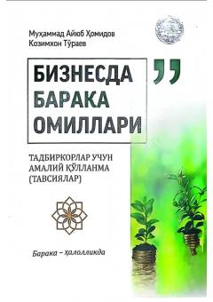

BBTadbirkorlar uchun islomiy tamoyillar asosida halol tijorat yuritish va barakaga erishish qo'llanmasi.
Ushbu risola tadbirkorlarga amaliy qo'llanma bo'lib, unda Qur'oni Karim oyatlari va hadisi shariflar asosida halol tijorat qilish yo'llari bo'yicha islomiy tavsiyalar bayon etilgan. Savdoga yolg'on aralashtirmaslik, tarozini to'g'ri tortish va omonatga xiyonat qilmaslik kabi tamoyillar biznesda baraka va o'sishni ta'minlashi tushuntirilgan.